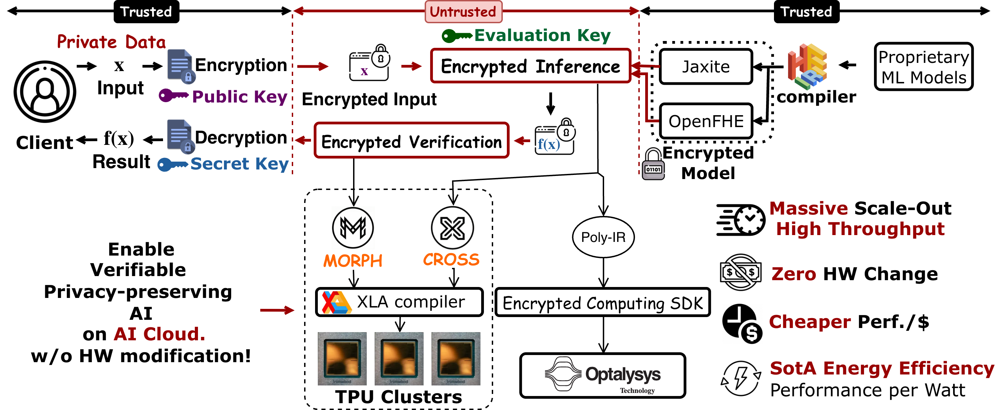

Cryptography Primitives Acceleration (CPA Tutorial)
Mar 22: Morning @ ASPLOS'26
Artificial Intelligence (AI) is driving a new industrial revolution, transforming how we create, exchange, and safeguard information. From chatbots and autonomous vehicles to enterprise assistants and AI coders, human workflows are increasingly translated into digital tokens—a process that makes the world effectively tokenized. Yet this transformation exposes sensitive data at an unprecedented scale, making privacy preservation a defining challenge of the AI era. Current privacy solutions, however, remain prohibitively expensive. Software-based encryption can slow computation by 100–10,000×, while hardware isolation demands millions of dollar fabrication costs. These barriers make privacy protection over prohibitive, leaving the broader AI revolution unprotected. This tutorial gives you a tour of the state-of-the-art in cryptography primitives acceleration, and how to make privacy protection as efficient and accessible as unprotected AI.
In this tutorial, you will learn:
- (a) How to convert an AI model into Homomorphic Encryption (HE), enabling privacy-preserving AI inference, and how to make a compiler to do so?
- (b) How to deploy HE on TPU hardware to achieve SotA throughput and energy efficiency?
- (c) How to further extend HE to arbitrary-precision cryptography primitives, enabling Zero-Knowledge Proofs (ZKPs)?
- (d) How to write high-performance JAX kernels, optimize them to run on distributed TPUs?

Figure 1: CPA overview, turning TPU as a crypto accelerator, achieving SoTA throughput and energy efficiency.
CPA Resources
CROSS
Enabling Google TPUs for HE, achieving SoTA throughput and energy efficiency.
HEIR
Google's MLIR-based compiler toolchain for converting AI models into HE.
SmartPAF
Non-polynomial operators approximations to make model crypto-friendly.
MORPH
Enabling TPUs for ZKP (arbitrary-precision MSM and NTT).
Encrypted Computing SDK
Stay tuned for latest repository of Encrypted Computing SDK.
Keynote Speaker
Craig Gentry
Chief Scientist, Cornami
Craig Gentry is known for constructing the first fully homomorphic encryption scheme in 2009, resolving a central open problem in cryptography. His subsequent work has focused on improving the efficiency of FHE and related cryptographic primitives including obfuscation and multilinear maps. He received the ACM Grace Murray Hopper Award and the Gödel Prize for his work on FHE.
Practical FHE: Three Questions for the Architecture Community
Fully homomorphic encryption allows arbitrary computation on encrypted data without relying on trusted hardware — a property that becomes increasingly valuable as AI drives sensitive computation onto outsourced infrastructure. This talk examines three questions that arise naturally when the architecture community turns its attention to FHE:
- How bad is the overhead? Perhaps less than you think. For matrix multiplication — the operation dominating transformer inference — recent "inside-out" techniques reduce encrypted MM to a small constant number of unencrypted matrix multiplications, allowing use of standard optimized routines (cuBLAS, MXU kernels, etc.).
- What should hardware target? FHE workloads are fully deterministic, streaming-friendly, and built on structured algebra — excellent properties for hardware acceleration. But perhaps the safest bets are on FHE's invariant structural properties, not on whichever operation happens to be the current bottleneck.
- Is this even an ASIC problem? Commodity GPUs and TPUs already provide strong baselines. While ASICs can accelerate FHE computation, Amdahl's Law limits overall speedup when data movement and memory bandwidth are also significant factors.
The talk concludes by asking why FHE is not ubiquitous despite growing demand, and argues that algorithms, hardware, and systems need modular interfaces across the full stack that let each layer advance without breaking the others.
Agenda (Mar 22, 2026, ASPLOS'26)
Welcome
Speaker: Tushar Krishna
Keynote: Practical FHE: Three Questions for the Architecture Community
Speaker: Craig Gentry
HEIR Compiler: A Universal Compiler for Homomorphic Encryption
Speaker: Jeremy Kun
- Compilation of a PyTorch model through the HEIR compiler.
- Optimization passes and design choices in HEIR compiler.
- Highlight potential for external projects to integrate with HEIR.
- Doing research on top of HEIR, and new directions for research.
A new suite for FHE Benchmarking
Speaker: Shruthi Gorantala
- Introduction to fhe-benchmarking.org
- Design choices for the framework
- How to make a submission
- How to add new workloads
CROSS – Enabling Google TPU for Homomorphic Encryption
Speaker: Jianming Tong
Compilation Transformation Turning TPU into SoTA Throughput Machine for HE Operators.
- TPU Detailed Architecture and Programming Tips.
- Memory, Computation and Accuracy overhead of Cryptography primitives (HE and ZKP).
- Gap between TPU and HE.
- Basis Aligned Transformation (BAT) and Memory Aligned Transformation (MAT).
- Hands on: HE Kernels (HEAdd, HEMul, HERotation, HERescale, NTT, Keyswitch)
- Hands on: Encode, Encryption, Decryption, Decode
MORPH – Enabling Google TPU for ZKP
Speaker: Jingtian Dang
Compilation Transformation Turning TPU into SoTA Throughput Machine for ZKP.
- MXU-lazy Modular Reduction for High-precision Modular Arithmetics.
- Hands on: Efficient Modular Reduction and Multiplication for Big Integers (>256 bits)
- Hands on: High-precision MSM and NTT
Hardware-Software co-design for advanced hardware accelerators
Speaker: Flavio Bergamaschi
- High-level overview of a photonics-based compute core
- High-level overview of the Encrypted Computing SDK
- Introduction to the Polynomial Instruction Set Architecture
- Introduction to Kernel generation
- Introduction to local and global optimizations
- Examples of compiled kernels for FHE ciphertext maintenance (e.g., Relinearization and Modulus switching)
Organizers
Jianming Tong
Georgia Institute of Technology
5th-year PhD candidate, enabling systems for Agentic Cryptography. One system for both AI and cryptography primitives.
Tushar Krishna
Georgia Institute of Technology
Associate Professor in ECE. Research spans computer architecture, interconnection networks, distributed systems, and AI/ML accelerator systems.
Jeremy Kun
Staff software engineer and tech lead on HEIR compiler. Author of "A Programmer's Introduction to Mathematics".
Flavio Bergamaschi
Optalysys Ltd
Vice President of Cryptography and Algorithms at Optalysys, responsible for shaping the research and development strategy and the hardware-software co-design of Optalysys' Photonic Technology.
Anupam Golder
Intel Corporation
Research scientist at Intel CRL developing ASIC microarchitectures for cryptographic accelerators like FHE.
Jingtian Dang
Georgia Institute of Technology
2nd-year PhD student. Leads the project to map ZKP primitives onto Google TPUs.
Shruthi Gorantala
Co-founder of FHE team at Google. Driving standardization of FHE Benchmarks
Asra Ali
Software Engineer on Privacy, Safety, and Security. Focus on developing a transpiler for FHE.
Baiyu Li
Research Scientist studying lattice-based cryptography and secure computation. PhD from UC San Diego.
Simon Langowski
MIT
PhD student at MIT working on cryptography for systems to innovate efficient algorithms for crypto workloads.
Citation
If you find this tutorial helpful, feel free to:
- Star CROSS repo at https://github.com/EfficientPPML/CROSS
- Star the HEIR repo at https://github.com/google/heir
- Star the Jaxite repo at https://github.com/google/jaxite
- Cite our paper with biblatex below:
@inproceedings{tong2026CROSS,
author = {Jianming Tong and Tianhao Huang and Jingtian Dang and Leo de Castro and Anirudh Itagi and Anupam
Golder and Asra Ali and Jevin Jiang and Jeremy Kun and Arvind and G. Edward Suh and Tushar Krishna},
title = {Leveraging ASIC AI Chips for Homomorphic Encryption},
year = {2026},
address = {Australia},
booktitle = {2026 IEEE International Symposium on High Performance Computer Architecture (HPCA)},
keywords = {AI ASICs, TPU, Fully Homomorphic Encryption},
location = {Australia},
series = {HPCA'26} }@inproceedings{tong2026MORPH,
author = {Jianming Tong and Jingtian Dang and Simon Langowski and Tianhao Huang and Asra Ali and Jeremy Kun and Srini Devadas and Tushar Krishna},
title = {MORPH: Enabling AI ASICs for Zero Knowledge Proof},
year = {2026},
publisher = {IEEE Press},
booktitle = {Proceedings of the 63nd Annual ACM/IEEE Design Automation Conference},
location = {Los Angeles, California, United States},
series = {DAC '26}
}@misc{ali2025heiruniversalcompilerhomomorphic,
title={HEIR: A Universal Compiler for Homomorphic Encryption},
author={Asra Ali and Jaeho Choi and Bryant Gipson and Shruthi Gorantala and Jeremy Kun and Wouter Legiest and Lawrence Lim and Alexander Viand and Meron Zerihun Demissie and Hongren Zheng},
year={2025},
eprint={2508.11095},
archivePrefix={arXiv},
primaryClass={cs.CR},
url={https://arxiv.org/abs/2508.11095},
}